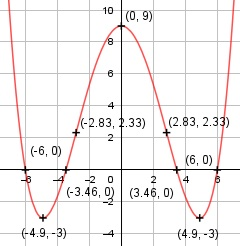

Aufgabe 50 f(x) = (1/48)x4 - x2 + 9 f'(x) = (1/12)x3 - 2x, f''(x) = 0,25x2 - 2, f'''(x) = 0,5x Definitionsbereich: -∞ < x < ∞ Wertebereich: -3 ≤ f(x) < ∞ (siehe Extrempunkte) Asymptoten: - Symmetrie: nur gerade Exponenten --> f(-x) = (1/48) * (-x)4 - (-x)2 + 9 = = (1/48) * x4 - x2 + 9 = f(x) --> achsensymmetrisch zur y-Achse Nullstellen: (1/48)x4 - x2 + 9 = 0 Substitution z = x2 (1/48)z2 - z + 9 = 0 |*48 z2 - 48z + 432 = 0 p, q - Formel: p = -48, q = 432 z1,2 = z1,2 = 24 ± z1,2 = 24 ± z1,2 = 24 ± 12 z1 = 36 z2 = 12 Rücksubstitution: 36 = x1,22 |ⱱ x1,2 = ± 6 12 = x3,42 |ⱱ x3,4 = ± 3,46 N1(6|0), N2(-6|0), N3(3,46|0), N4(-3,46|0) Schnittpunkt mit der y-Achse: f(0) = (1/48) * 04 - 02 + 9 = 9 Sy(0|9) Extrempunkte: (1/12)x3 - 2x = 0 | *12 x3 - 24x = 0 x * (x2 - 24) = 0 x1 = 0, f(0) = 9 x2 - 24 = 0 |+24 x2 = 24 |ⱱ x2,3 = ± 4,9 f(4,9) = (1/48) * 4,94 - 4,92 + 9 = -3 f(-4,9) = (1/48) * (-4,9)4 - (-4,9)2 + 9 = -3 f''(0) = 0,25 * 02 - 2 < 0 --> Hochpunkt (0|9) f''(4,9) = 0,25 * 4,92 - 2 > 0 --> Tiefpunkt (4,9|-3) f''(-4,9) = 0,25 * (-4,9)2 - 2 < 0 --> Tiefpunkt (-4,9|-3) Wendepunkt: 0,25x2 - 2 = |+2 0,25x2 = 2 | :0,25 x2 = 8 |ⱱ x1,2 = ± 2,83 x1 = 2,83, f(2,83) = (1/48) * 2,834 - 2,832 + 9 = 2,33 x2 = -2,83, f(-2,83) = (1/48) * (-2,83)4 - (-2,83)2 + 9 = 2,33 f'''(2,83) ≠ 0 --> Wendepunkt (2,83|2,33) f'''(-2,83) ≠ 0 --> Wendepunkt (-2,83|2,33) Graph:
